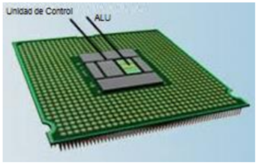
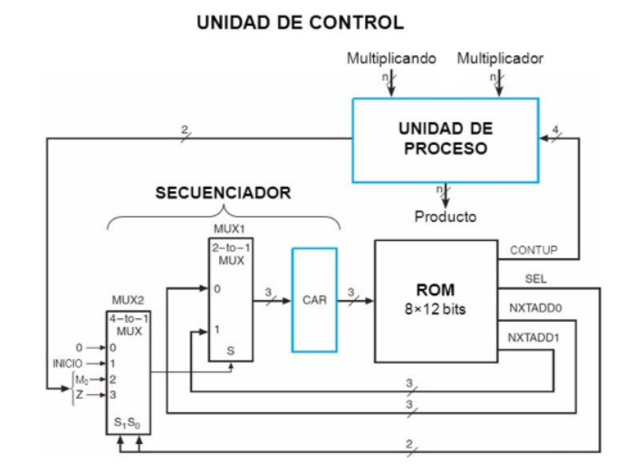

Arquitectura de Computadoras. Unidad de Control. Es la parte “inteligente” del sistema microprocesador, de los CPU ́s.
Debido a que el procesador desarrolla sus tareas en función de las instrucciones secuenciadas que ha organizado e implementado el programador, es necesario que el sistema interprete cada tipo instrucción para actuar en consecuencia. Es lo que se conoce también como decodificación de la instrucción. Es el centro lógico de la computadora ya que los recursos de una computadora son administrados en la unidad de control, es esta unidad la que se encarga de dirigir el flujo de datos. Las instrucciones del CPU se encuentran incorporadas en la unidad de control, estas instrucciones o conjunto de instrucciones enumeran todas las operaciones que un CPU puede realizar. Cada instrucción es expresada en microcódigo. Antes de que un programa sea ejecutado, cada comando debe desglosarse en instrucciones que correspondan a las que están en las instrucciones del CPU. Al momento de ejecutar el programa, el CPU lleva a cabo las instrucciones en orden convirtiéndolas en microcódigo. A pesar de la complejidad que resulta del proceso, la computadora puede realizar este proceso a una velocidad increíble. Cuando un CPU es desarrollado, el conjunto de instrucciones tiene los mismos comandos que su predecesor, aparte de incluirle algunos nuevos. Esto permite que el software escrito para un CPU trabaje con computadoras con procesadores más recientes, esta estrategia es llamada compatibilidad ascendente. Esta característica permite ahorrar a los consumidores comprar un sistema nuevo cada vez que una parte del sistema es actualizada. Se le conoce compatibilidad decreciente o inversa, cuando un dispositivo del hardware o pieza del software puede interactuar con el mismo equipo y software que su predecesor Hemos visto en el esquema general del CPU, la existencia de registros y de la ALU. Precisamente, cada instrucción puede significar comunicaciones a través de los buses internos y externos. Entre los bloques funcionales, para la transferencia de los datos binarios (datos propiamente dichos o direcciones). Hay instrucciones simples y complejas, en el sentido que una simple puede significar la transferencia entre dos registros internos del sistema.
La modificación de los bits contenidos en un registro dado, pero puede haber instrucciones que impliquen varios movimientos o transferencias de bits o datos utilizando reiteradamente los buses internos o externos del sistema para la cual es necesario establecer una secuencia organizada para compartir los buses que son comunes a todos los bloques funcionales. Estas transferencias secuenciales de los datos la realiza la unidad de control, precisamente señales de control a los distintos bloques. A cada una de estas transferencias de datos que forma parte de una instrucción se la conoce como microinstrucción. El conjunto de instrucciones que conforman cada instrucción, vienen grabadas de fábrica en el chip del CPU, en una memoria de tipo ROM y por lo general no es accesible al programador. Este tipo de sistema se denomina microprogramado. Modelos (2.901 A de Advanced Micro Devices), que permiten el acceso a la ROM, para definir un propio juego de instrucciones, pero ello implica tener un conocimiento muy profundo de los detalles de los circuitos para obtener un funcionamiento óptimo. Los sistemas micro programables. Puede darse el caso que cuando se está realizando una instrucción, antes de terminarla se salte a otra instrucción. Esto puede darse según las señales de condición que esté recibiendo en ese momento la unidad de control. Funciones de la unidad de control. Las funciones de comando que parten de la unidad de control: 1) Decodificación de las instrucciones. 2) Sincronización de las tareas. -Administración de los buses internos de comunicación del microprocesador. -Manejo de las líneas de intercambio con el exterior (buses externos) que permiten la interacción del CPU en la memoria principal y los periféricos. -Indicación a la ALU sobre las operaciones a realizar. Todas las funciones de comando que salen de la unidad de control se corresponden con las señales de entrada a la unidad que pueden ser: Un código de instrucción que almacenado en el registro de entrada contiene la operación a ser ejecutada así como el modo de direccionamiento con que se obtiene el operando. Un secuenciador que a partir del reloj que posee el sistema realiza un conteo que permite localizar las instrucciones sucesivas que componen la instrucción. ƒ Un conjunto de condicionamientos que identifican a aquellos eventos que provocan alteraciones en la secuencia normal de un programa (interrupciones, saltos por condiciones del registro de estado).
